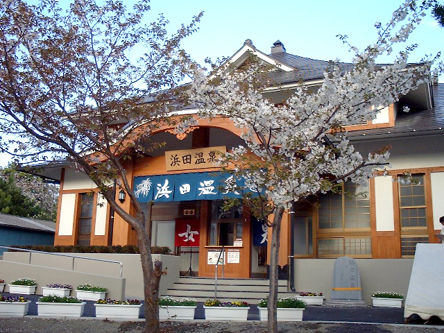

浜田温泉
古くは浜田鉱泉・内竈の湯とも言われ、明治中期の文献によると発見は明治30年ごろとされます。
昭和10年に建設された温泉は、1階が温泉、2階が公民館として長年利用されていましたが、平成14年4月、温泉の前に新たに鉄筋コンクリート和風造平屋建の温泉がオープンしました。
従来の市営温泉に比べ、高齢者の方々等が利用しやすい よう配慮した設計になっており、車椅子での出入りができるよう通路は広く、段差もありません。
浴槽や脱衣場も手すりを設置する等工夫がされています。
昭和10年に建設された温泉は、1階が温泉、2階が公民館として長年利用されていましたが、平成14年4月、温泉の前に新たに鉄筋コンクリート和風造平屋建の温泉がオープンしました。
従来の市営温泉に比べ、高齢者の方々等が利用しやすい よう配慮した設計になっており、車椅子での出入りができるよう通路は広く、段差もありません。
浴槽や脱衣場も手すりを設置する等工夫がされています。
- 営業時間
- 6:30〜22:30
- 料金
- 100 円
- 温度
- ―
- 効能
- 筋肉や関節の慢性的な痛み
- アメニティ
- タオル、石鹸、カミソリなど